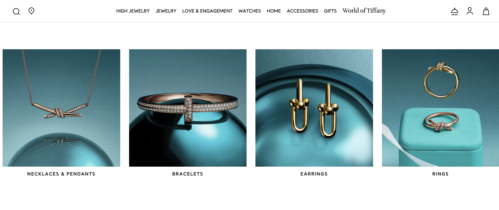
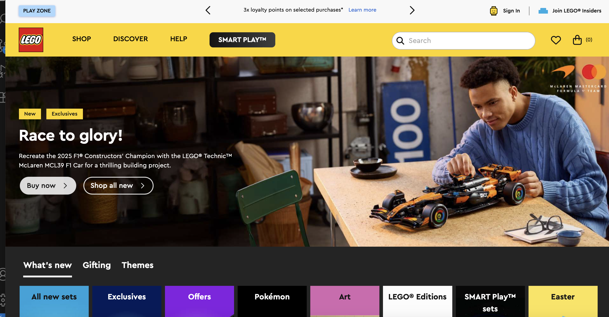

The Psychology of Palette: A Tale of Two Websites
By Renata Oliveira
In web design, color is more than just decoration; it is a silent language that tells the user how to feel before they even read a single word. As a content creator, I analyze how brands use color theory to drive engagement. Today, we look at how two vastly different brands use color to define their identity.
1. Tiffany & Co: The Power of a Signature Hue
Link: Tiffany.com

Tiffany & Co. is perhaps the most famous example of Monochromatic branding. Their use of "Tiffany Blue" creates an immediate sense of luxury, exclusivity, and calm.
Why I Like It: The website uses vast amounts of white space to let the signature blue pop. It feels expensive and uncluttered. It proves that you don't need a rainbow of colors to make a massive impact.
2. LEGO: The Triadic Energy
Link: Lego.com

On the opposite end of the spectrum is LEGO. Their site utilizes a Triadic Color Scheme (Red, Yellow, and Blue). These are primary colors that evoke childhood, creativity, and high energy.
Why It Works: While it could easily feel "messy," LEGO uses high-saturation colors to guide the eye toward "Buy Now" buttons and new product releases. It’s a masterclass in using color to create a playful environment.
The Verdict
Color theory isn't about which colors are "better"—it's about alignment. Tiffany uses color to create a hushed, luxury experience, while LEGO uses it to create a loud, joyful one. When designing for social media or the web, the palette must always match the brand's voice.